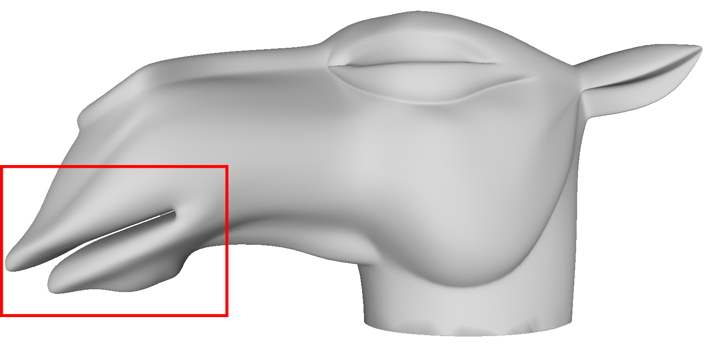
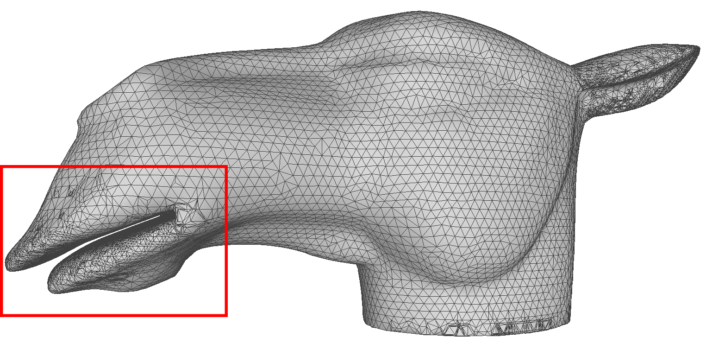
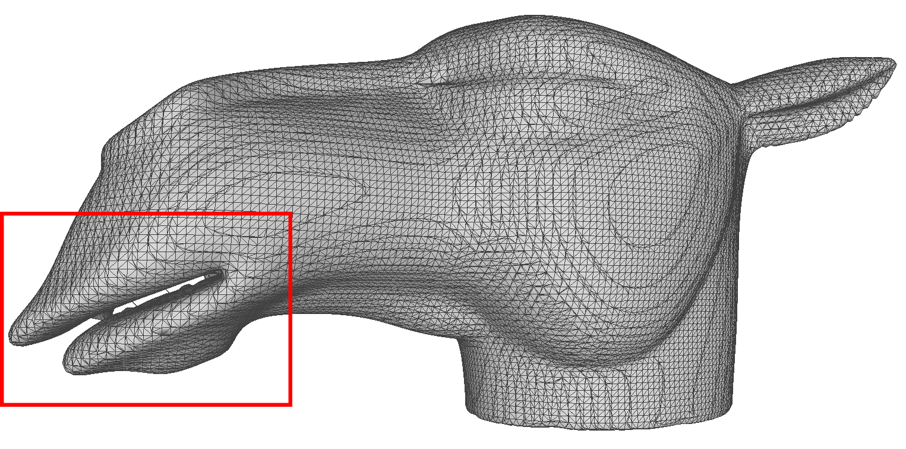
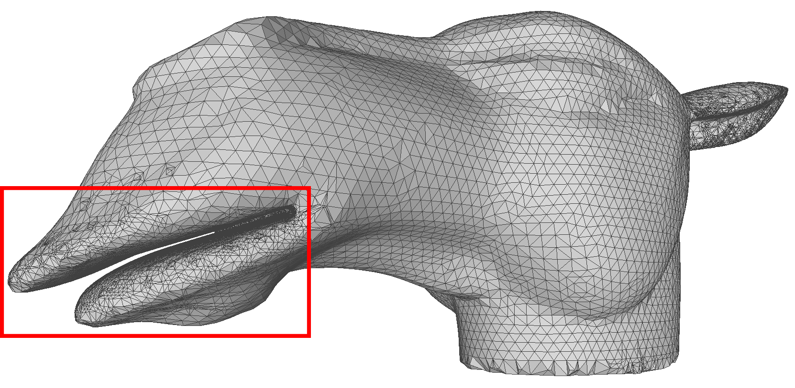
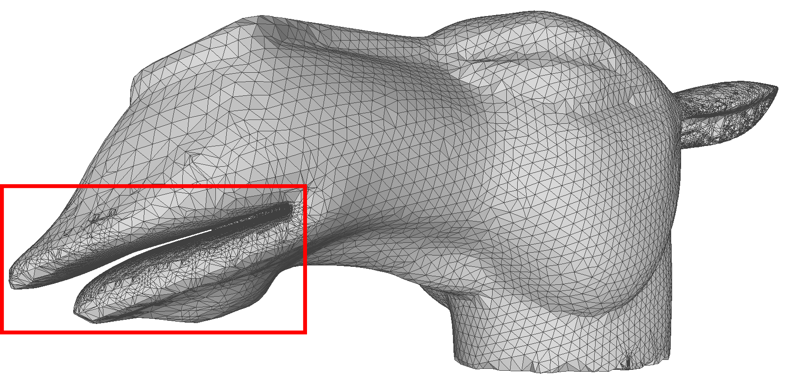
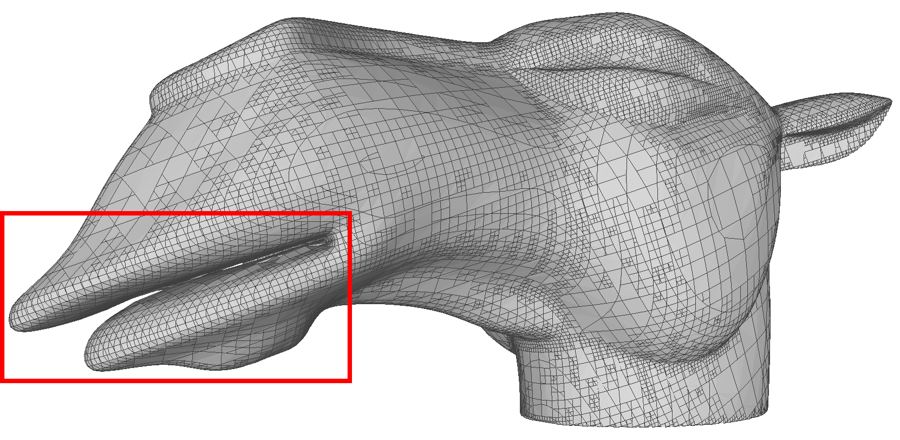

A Region-growing GradNormal Algorithm for Geometrically and Topologically Accurate Mesh Extraction
(PG Paper ID: 1072)
(PG Paper ID: 1072)
Comparison in topology
From left to right: Input shape, Ours, GradNormal, Marching Cubes. ( With similar number of vertices )
( Right-click to open image with high-resolution in a new tab. )
|  |  |  |
 |
Rotational invariance
Adaptive Marching Cubes is topologically sensitive to rotation. The second and fourth picture is the reconstructed from the model aligning the narrow gap of the mouth with the xy plane.
|  |  |  |
 |